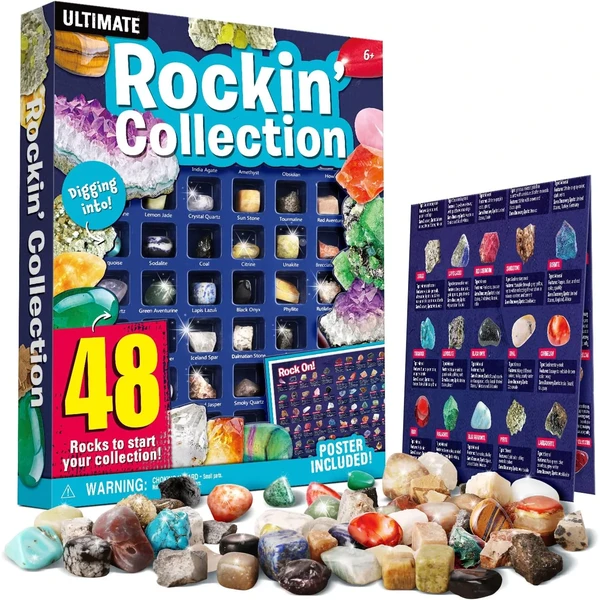
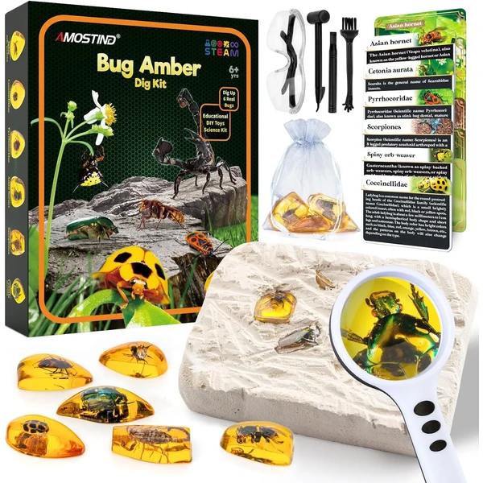
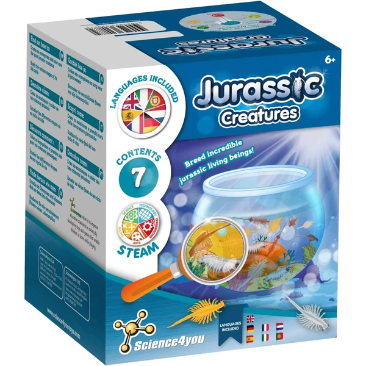
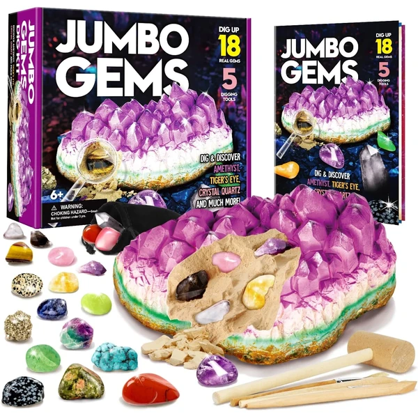
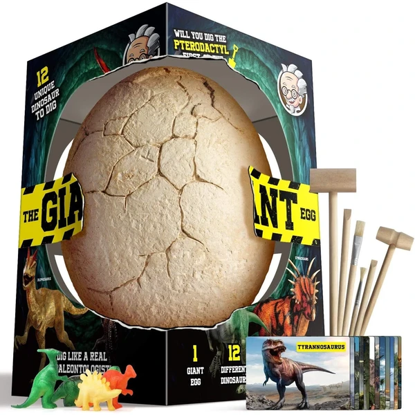

A los 6 años los kits de ciencia pueden incluir experimentos con varios pasos y algo de teoría sencilla detrás, como por qué reaccionan ciertos materiales o cómo funciona un imán. El niño empieza a anotar resultados, comparar y sacar sus propias conclusiones, aunque sean muy básicas. Es una etapa estupenda para fomentar el interés por la ciencia de forma práctica. En esta selección encontrarás juegos de ciencia pensados para esta edad.
¿Qué desarrollan los juegos de ciencia a los 6 años?
Comparar resultados y sacar conclusiones propias, aunque sean sencillas, acerca al niño al método científico real.
- Curiosidad
- Observación
- Pensamiento lógico
- Concentración
- Experimentación
- Vocabulario

XXTOYS Kit de 48 Minerales
Una colección de 48 minerales y piedras preciosas naturales auténticas en una caja con compartimientos individuales, con guía educativa a todo color para identificar cada espécimen.
⭐ ¿Por qué nos gusta?
- ✔ 48 minerales naturales auténticos distintos.
- ✔ Caja con compartimientos para organizar la colección.
- ✔ Guía educativa detallada en color.
💬 Lo que más destacan las familias
Muchos padres coinciden en que la variedad de piezas mantiene el interés durante mucho tiempo, porque siempre hay un mineral nuevo que clasificar. También se comenta que la presentación en la caja con compartimentos ayuda a que los niños cuiden la colección y quieran conservarla.
Ver en Amazon

Science4you T-Rex Excavaciones Fósiles
Un kit de excavación arqueológica con 10 fósiles de T-Rex para excavar con herramientas de verdadero paleontólogo, incluyendo folleto educativo en 8 idiomas que explica la extinción de los dinosaurios.
⭐ ¿Por qué nos gusta?
- ✔ 10 fósiles distintos para excavar y ensamblar.
- ✔ Folleto educativo en 8 idiomas.
- ✔ Experiencia práctica de arqueólogo real.
💬 Lo que más destacan las familias
Quienes lo han probado destacan que el proceso de excavar engancha desde el primer fósil, sobre todo entre los más fans de los dinosaurios. También se valora que el folleto explique de forma sencilla por qué se extinguieron, algo que suele generar muchas preguntas después.
Ver en Amazon

AMOSTING Fósil de Ámbar con Insectos
Un kit de excavación con 6 fósiles de ámbar con insectos preservados, herramientas de excavación reales, lupa para observación y guía de clasificación para aprender sobre los insectos atrapados.
⭐ ¿Por qué nos gusta?
- ✔ 6 fósiles de ámbar con insectos auténticos.
- ✔ Incluye lupa para observar detalles.
- ✔ Guía de clasificación de insectos.
💬 Lo que más destacan las familias
Entre los comentarios más habituales aparece la sorpresa de descubrir el insecto escondido dentro del ámbar, un momento que engancha especialmente a los más curiosos. También gusta que la lupa y la guía ayuden a identificar qué han encontrado, dándole un aire de investigación real.
Ver en Amazon

Science4you Artemias Criaturas Jurásicas
Un kit para crear un ecosistema acuático con artemias y dragones de agua, aprende sobre estas criaturas prehistóricas a través del cuidado directo, con folleto educativo en 7 idiomas.
⭐ ¿Por qué nos gusta?
- ✔ Cría viva de artemias y dragones de agua.
- ✔ Experiencia práctica de biología y ecología.
- ✔ Folleto educativo en 7 idiomas.
💬 Lo que más destacan las familias
Se repite bastante el comentario de que ver crecer a las artemias día a día mantiene la curiosidad activa durante semanas, mucho más que un experimento de un solo uso. Los padres también valoran que sea una primera toma de contacto con el cuidado de seres vivos.
Ver en Amazon

Dr. Daz Kit Jumbo de Gemas
Un kit de excavación gigante con 18 gemas escondidas incluyendo cristal de roca, pirita, amatista y jaspe rojo, con 5 herramientas de excavación profesionales, guía de aprendizaje y lupa.
⭐ ¿Por qué nos gusta?
- ✔ 18 gemas y minerales distintos a descubrir.
- ✔ 5 herramientas de excavación profesionales.
- ✔ Guía de aprendizaje de 16 páginas a color.
💬 Lo que más destacan las familias
Un detalle que aparece una y otra vez es lo entretenido que resulta ir descubriendo cada gema con las herramientas de excavación, que se sienten resistentes y cómodas de manejar. También se valora que dé para muchas sesiones de juego, ya que quedan bastantes piezas por descubrir.
Ver en Amazon

Dr. Daz Kit de Huevos de Dinosaurio Jumbo
Un huevo gigante de yeso para excavar y descubrir 12 figuras de dinosaurios distintos (T-Rex, Dilofosaurio, Anquilosaurio y más) con herramientas de excavación y 12 tarjetas de aprendizaje ilustradas.
⭐ ¿Por qué nos gusta?
- ✔ 12 dinosaurios distintos para descubrir.
- ✔ Experiencia de excavación tipo paleontólogo.
- ✔ 12 tarjetas de aprendizaje con información.
💬 Lo que más destacan las familias
Los compradores valoran especialmente la emoción de no saber qué dinosaurio va a aparecer hasta el final de la excavación, lo que anima a completar el huevo entero. También se comenta que las tarjetas de aprendizaje despiertan interés por seguir buscando información sobre cada especie.
Ver en Amazon